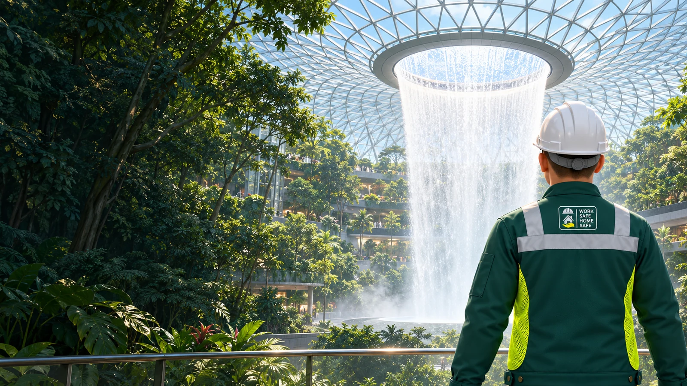
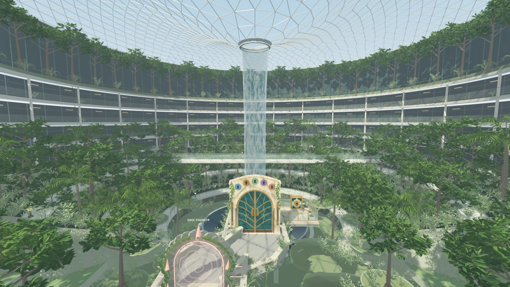
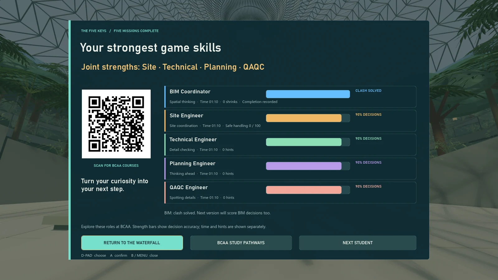
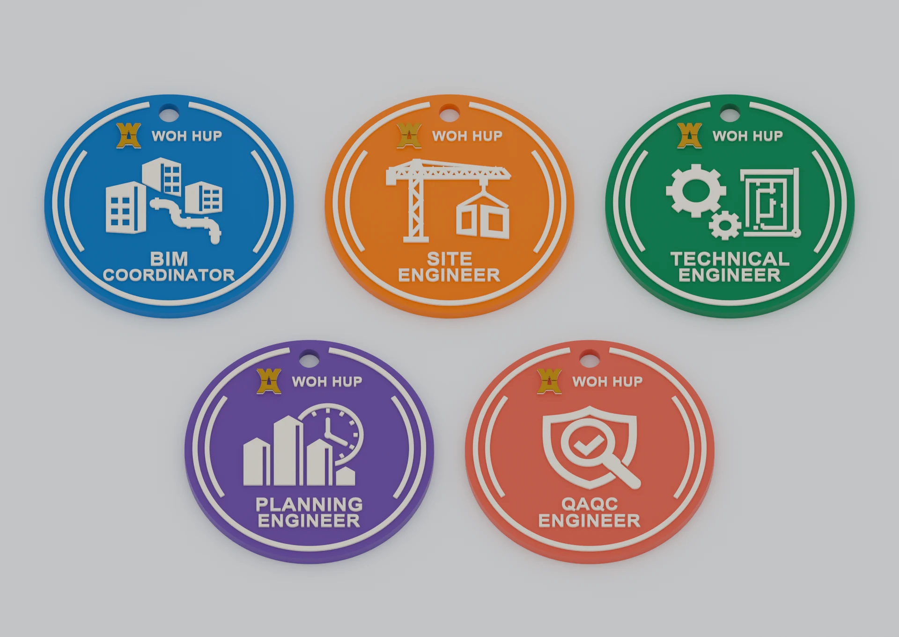
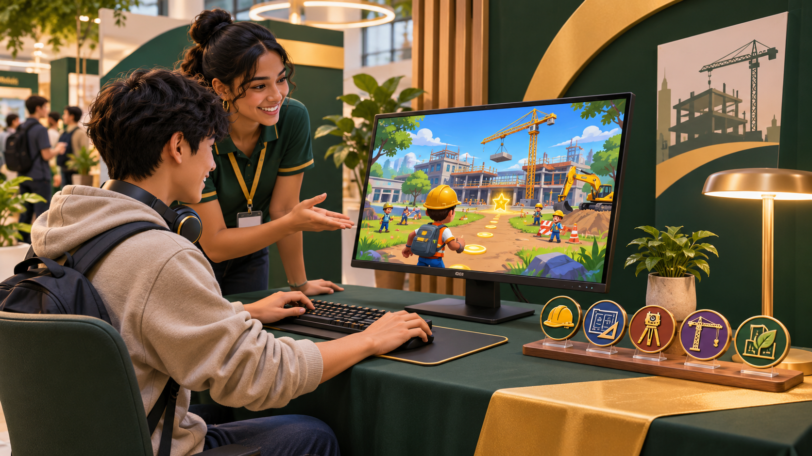
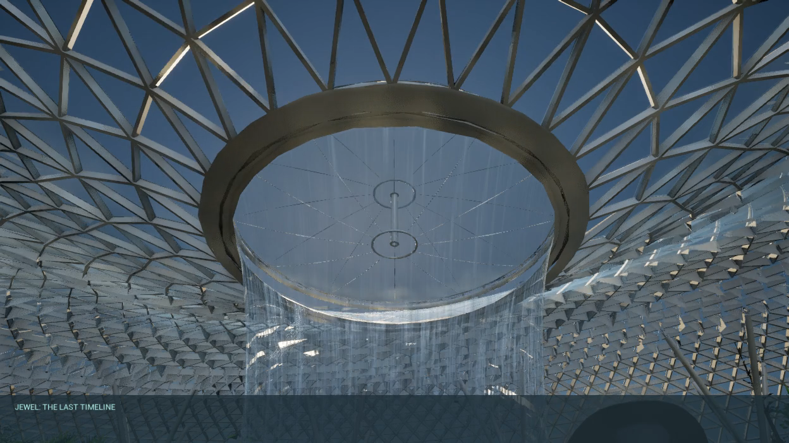
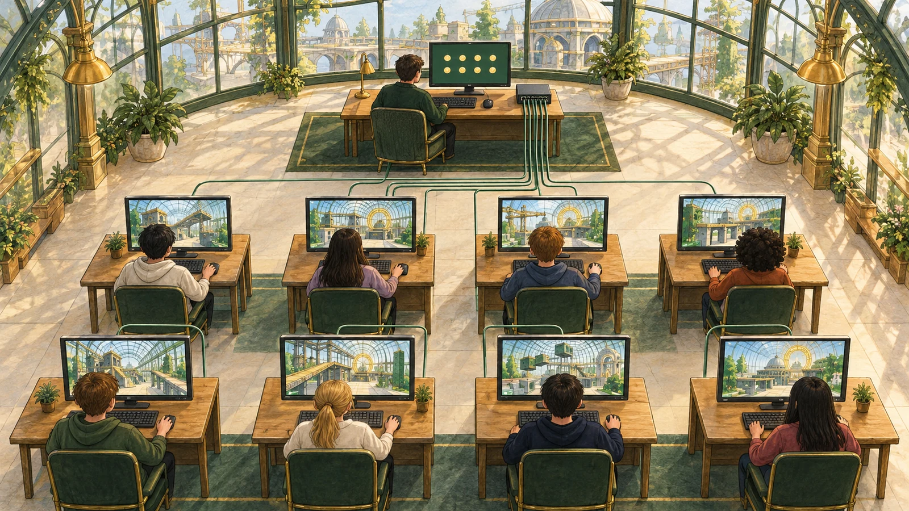
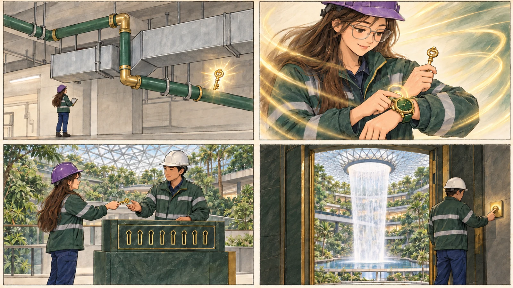
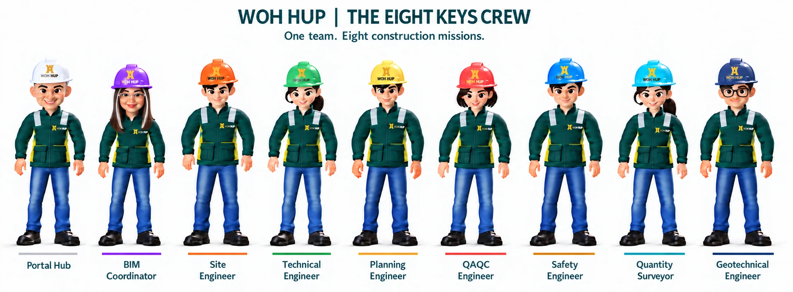

Guide the team.
The leader hosts, operates the time machine, coordinates progress and receives the keys.

WOH HUP · BCAA OPEN HOUSE
Explore construction careers on your own, or join a team on a journey through time.
JEWEL HOME-MENU ILLUSTRATION · NOT GAMEPLAY

ACTUAL GAMEPLAY CAPTURE
01 / THE FIRST ADVENTURE
SINGLE-PLAYER · STYLIZED CARTOON STYLE · CAREER DISCOVERYONE PLAYER. FIVE PERSPECTIVES.
A one-player journey through five construction roles, with friendly cartoon-style graphics and practical challenges.
Play The Five Keys DemoBrowser demo · The first download is approximately 93 MB.
FIVE TASKS, FIVE ROLES
Students take on the roles in order. Each completed mission earns a key.
THE REWARD
The demo generates a personal report from the player’s results. It compares decision accuracy for Site, Technical, Planning and QAQC; BIM completion is recorded separately. Use it to start a conversation, not as a career aptitude test.
Planned event reward: a custom 3D-printed role badge with a QR code on the back linking to BCA course information for that role. Badge production and the role-specific QR handout are planned.


EVENT DAY · AN IDEA
Imagine a student exploring each role at a game station, with a guide nearby to help.

OPTION 02 · TEAM ADVENTURE
Change the past. Restore the flow.
Explore the game ↓HOME-MENU ILLUSTRATION · NOT GAMEPLAY
02 / THE TEAM ADVENTURE
9-PLAYER MULTIPLAYER LAN · REALISTIC CHANGI JEWEL · TIME TRAVEL RESCUECHANGE THE PAST. RESTORE THE FLOW.
Inspired by Avengers: Endgame, a team travels back to fix engineering problems and bring the waterfall back to life.
In this fictional story, a past construction mistake stops the Rain Vortex. The students must find and check the problems before returning to the future with their keys.
The story, faults and time travel are fictional; they are not claims about the real Jewel.

SEE THE WORLD
Watch the short opening before the team begins its journey.
Actual 24-second opening · silent · recorded before the later role introductions and BIM character update.
EVENT DAY SETUP · PLANNED
Nine students play at the same time on nine individual PCs: one student leader and eight engineering role players.

The leader hosts, operates the time machine, coordinates progress and receives the keys.
Each student takes a different role and completes an independent mission in the past.
Students who finish early can share clues and help teammates. Direct control of another player’s mission has not been verified.
Current status: Eight scoped missions, the team ending and a Host/Join foundation exist in the prototype. The full nine-PC venue LAN setup still needs testing.
EIGHT ENGINEERING ROLES
Each role checks its work and earns a unique key. The images show actual prototype mission introductions; the dates are fictional.
THE ENDING


03 / PRESENTATION FLOW
TWO OPTIONS, ONE PURPOSE
Start with one student exploring five roles, then introduce a team working together to restore the flow.
| Feature | Option 1: The Five Keys | Option 2: Jewel: The Last Timeline |
|---|---|---|
| Players | Single player · 1 PC | Team of 9 · 9 PCs planned |
| Visual style | Stylized / cartoon | Realistic Jewel-inspired setting |
| Theme | Career exploration and report | Time-travel rescue inspired by Avengers: Endgame |
| Roles | 5 roles in sequence | 8 engineering roles + 1 leader |
| Takeaway | Personal report; role badge and course QR planned | Teamwork, coordination and handover |
Both are prototypes. The nine-PC setup, physical badges and course QR handout need event preparation and testing.